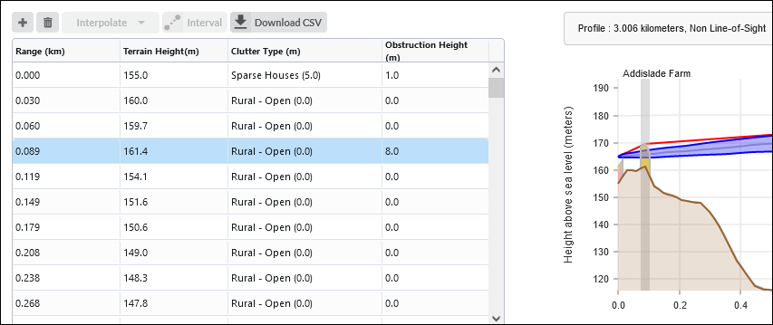

Verifying a Link End Using a Map and Google Earth¶
This is an example to show how Cambium link planners use a map and Google Earth(TM) to estimate the height of the terrain and obstructions near one end of a test link. We use the following aids:
Path Profile data imported into LINKPlanner.
LINKPlanner, open at the Link Profile and Profile Editor.
An accurate topographic map with contours at 10m intervals.
The Google Earth aerial photograph zoomed in on the end of the link.
Path Profiler returned the following profile for the start of a link path:
The antenna site is just below the 160 m contour, so the path profile height 159.2 m at range 0 km is probably correct. However, the 160 m contour curves around and crosses the link path at two points in the first 0.1 km of the link. This means that the path profile height of 157.7 m at range 0.089 km is too low. We estimate that the terrain height at this point is162 m.
We examine the Google Earth air photograph of the link end. This reveals some potential obstructions:
Just in front of the antenna - a building and some bushes, estimated height 6 m. The buildings cover the area around the antenna and therefore can be portayed in LINKPlanner as the clutter type Sparse Houses, which has a height of 5 m and then add an additional 1 m obstruction
At 0.1 km from the antenna - a row of trees, estimated height 8 m. These trees are very narrow and wouldn’t occupy the majority of the 100 m clutter pixel size in Europe and therefore these are better added as a single additional obstruction
These obstructions and the higher ground are annotated in this Google Earth photograph:
We enter estimates for the clutter types and obstructions and the higher ground in the Profile Editor:

Profile Updated with Map and Google Earth Results¶
Our conclusion is that the Fresnel zone may be severely obstructed at this site. This must be confirmed by conducting a survey, as described in Verifying a Link End Using a Survey.